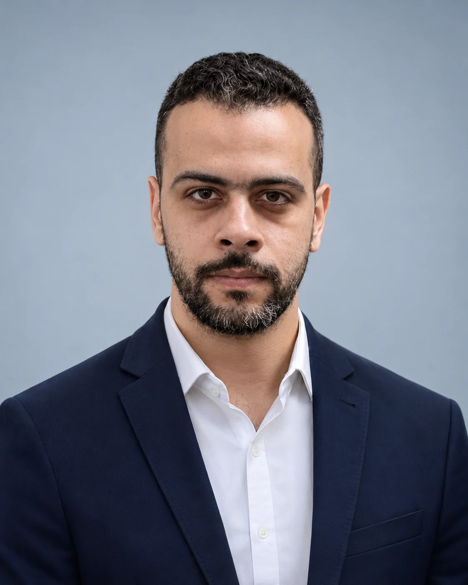

Bishop Integrated Solutions
أخصائي تحسين محركات البحث · دوام كامل · الإسكندريةأضع خطط تحسين محركات البحث، وأراجع الجوانب التقنية والمحتوى والروابط، وأتابع الأداء وفق أهداف النشاط.
أعمل في تحسين محركات البحث منذ 2022. أراجع أداء الموقع في البحث وأحدّد ما يحتاج إلى إصلاح أو تطوير، ثم أرتّب العمل بين التحسين التقني والمحتوى والروابط بحسب أثره على أهداف المشروع.

بدأت بالتدريب العملي في SEO House، ثم تولّيت مهام تحسين المواقع وإعداد التقارير. توسّع نطاق عملي لاحقًا إلى إعداد استراتيجيات لعدة عملاء ووضع خطط تتماشى مع أهداف كل مشروع.
أضع خطط تحسين محركات البحث، وأراجع الجوانب التقنية والمحتوى والروابط، وأتابع الأداء وفق أهداف النشاط.
أعددت استراتيجيات تحسين البحث لعدة عملاء، وعملت على الجوانب التقنية ومؤشرات أداء الويب الأساسية وحملات بناء الروابط.
عملت على تحسين الصفحات والجوانب التقنية، وتحليل المنافسين، وتخطيط الكلمات المفتاحية وإعداد تقارير الأداء.
تدرّبت عمليًا على تحسين الصفحات والجوانب التقنية والعمل خارج الموقع.
أمثلة توضّح ما نفّذته في مواقع الرعاية الصحية والبرمجيات والبحث المحلي.
تحسين ظهور الصفحات الطبية وتجربة التصفح على الهاتف.
مراجعة عوائق الفهرسة وتطوير صفحات خدمات الأتمتة.
تحسين صفحات التصنيفات للبحث المحلي عن شراء الأثاث المستعمل وبيعه.
عرّفني بموقعك وما تريد تحسينه، أو شاركني الفرصة التي تفكّر فيها.